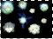
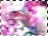
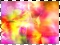

W A L L P A P E R SI made all of these wallpapers, and you can freely decorate your desktop with them.^_^ However, if you want to use them for purposes other than your desktop, you need to contact me before using it. Thank you. :D
Only
800x600 available
Not too fond of this one...It's got all of the Liefe Knights surrounding a silouette of Himeno and Hayate, about to pret. Shin's so cute in the picture and Sasame is droolworthy :P

800x600 ||
1024x768This one is almost exactly the same as the current main layout of Broken Echo. The only difference is that I had to add more at the bottom to fit the resolutions.^_^ I like the colors on this one, they clash pretty well :D

800x600 ||
1024x768The newest addition to the wallpapers section, this one is almost the exact same as my Site section layout, but I added more to it to fill the screen.^^ It's pretty colorful, as you can see XD
-----------------------------------------
Broken Echo is an AinoyumeNET production. Pretear was created by Kaori Naruse and Junichi Sato, © 2001. All rights reserved. {kind=link}
{kind=link}
{kind=link}
{kind=link}
{kind=link}